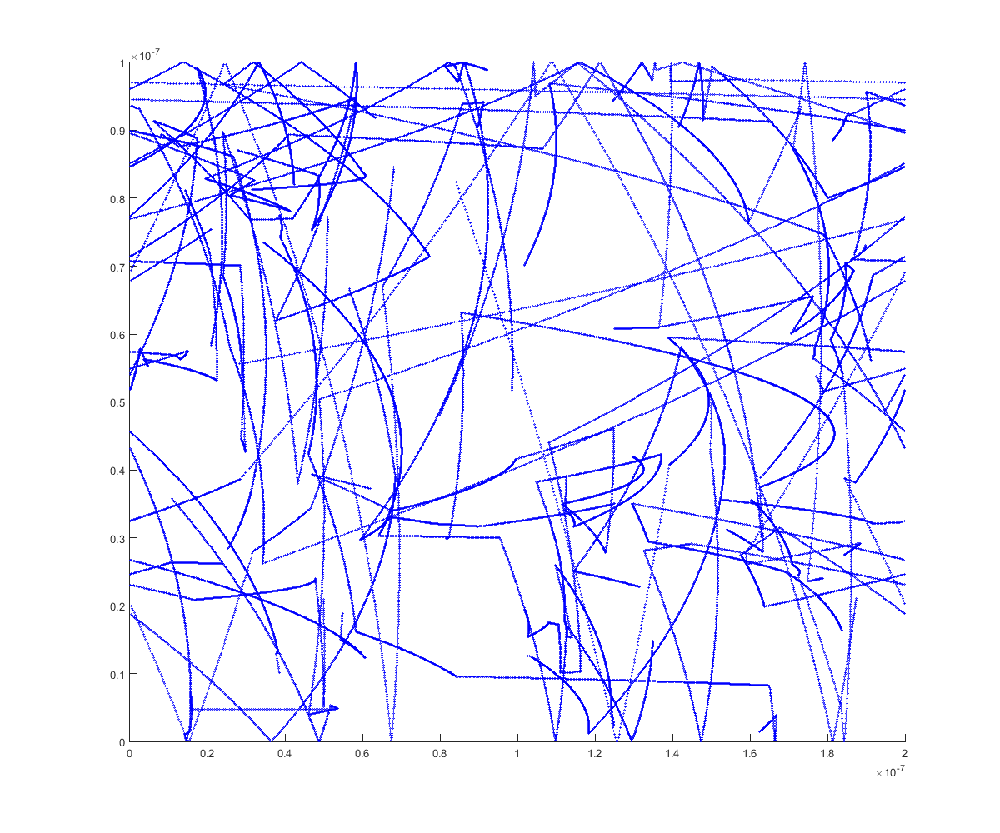
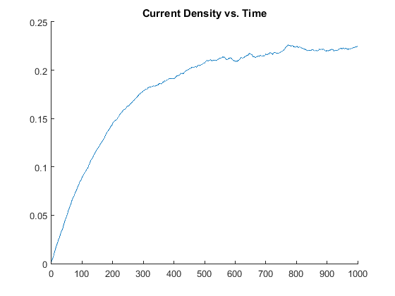
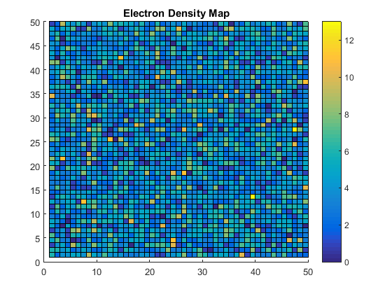
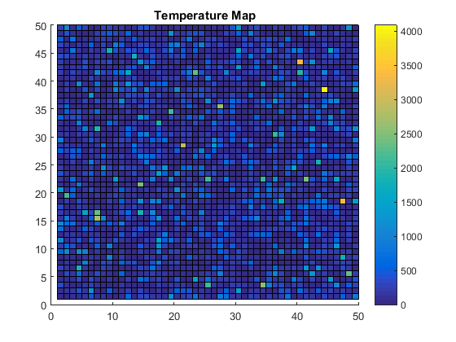
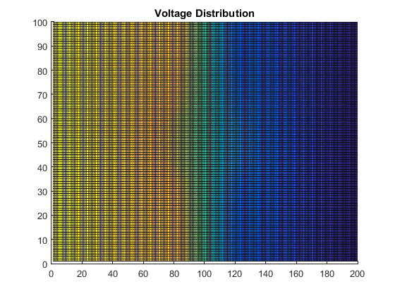
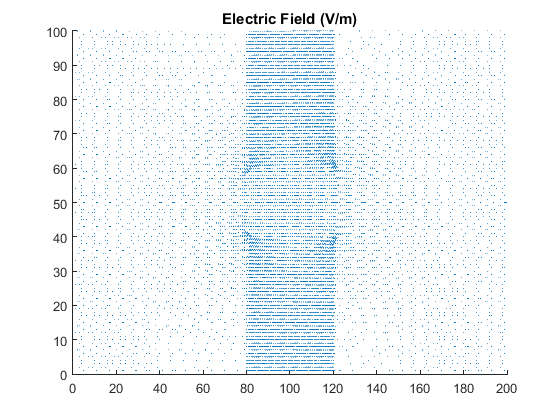
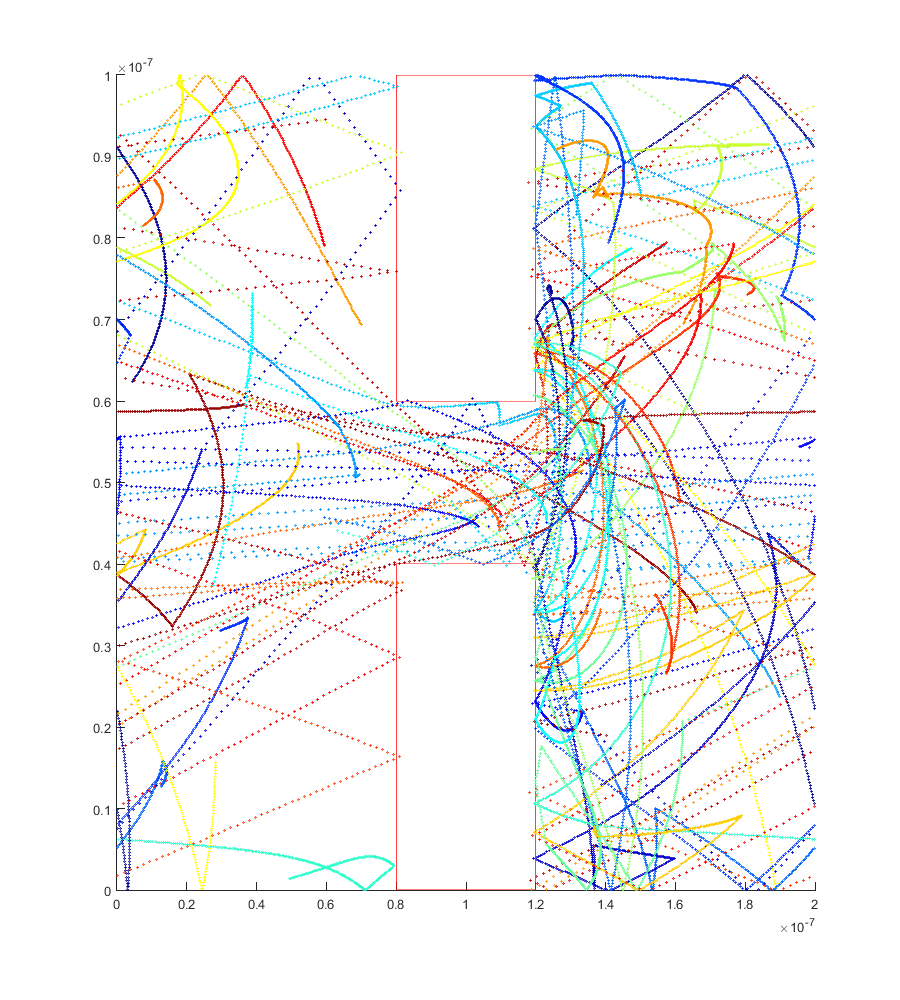
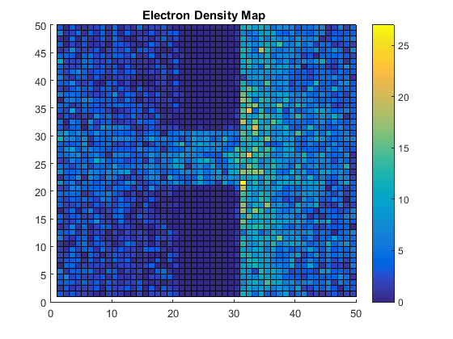

ELEC 4700 Assignment 3 - Monte-Carlo/Finite Difference Method
Contents
1 - Monte-Carlo Simluation
Below is the code to simulate electron motion under the influence of an external electric field.
C.m_0 = 9.10938215e-31; % electron mass C.kb = 1.3806504e-23; % Boltzmann constant C.q_0 = 1.60217653e-19; % electron charge nElectrons = 10000; nPlot=20; % number of electrons to actually plot T = 300; L = 200e-9; W = 100e-9; dt = 1e-15; % since 1/100 of 200nm is 2nm, smallest step allowed is 2nm/vth ~= 1e-14s TStop = 1e-12; % 1000 timesteps Vth = sqrt(2*C.kb*T/(C.m_0*0.26)); % using 2 degrees of freedom time = 0; Temp = T; % temperature variable that updates in TempCalc taumn = 0.2e-12; % average time between collisions sigmaMB = sqrt(C.kb*T/(C.m_0*0.26)); % standard deviation on vth cc = jet(nPlot); % colorscale used to plot different electron colors delVx = 0.8; % voltage difference in x direction delVy = 0; Ex = delVx/L; Ey = delVy/W; collisionT = zeros(200,nElectrons); % matrices for tracking collision time and velocities collisionV = zeros(200,nElectrons); collisionIndex = ones(1,nElectrons); collisions = 0; x = rand(1, nElectrons)*L; % assigning random initial particle positions y = rand(1, nElectrons)*W; Theta = rand(1, nElectrons)*2*pi; % selecting Vx and Vy from Gaussian centered at vth Vx = cos(Theta).*(Vth + sigmaMB*randn(1, nElectrons)); Vy = sin(Theta).*(Vth + sigmaMB*randn(1, nElectrons)); avgV = sum(sqrt(Vx.^2+Vy.^2))/nElectrons % calculation of initial average velocity currentD = zeros(1,1000); currentDTime = linspace(1,1000,1000); figure(2) hFig2 = figure(2); set(hFig2, 'Position', [0 0 1200 1000]) q=0; for i=0:dt:TStop time = i; q=q+1; hold on plot(x(1:30), y(1:30), 'bo','markers', 1); axis([0 L 0 W]); V2tot=Vx.*Vx+Vy.*Vy; % calculated temp based on total velocities KE = mean(V2tot)*0.5*(C.m_0*0.26); Temp = KE/C.kb; x = x - dt * Vx; % moving the particles in one time step y = y - dt * Vy; for j=1:nElectrons % specular and periodic boundaries if x(j) > L x(j) = x(j) - L; elseif x(j) < 0 x(j) = x(j) + L; end if y(j) > W Vy(j) = -Vy(j); elseif y(j) < 0 Vy(j) = -Vy(j); end end Vx = Vx + Ex*C.q_0/C.m_0*dt; % second term is acceleration x time Vy = Vy + Ey*C.q_0/C.m_0*dt; for j=1:nElectrons % collision, mfp, and mean time between collisions tracking if (1-exp(-dt/taumn)) > rand() collisions = collisions+1; collisionT(collisionIndex(j)+1,j) = time; collisionV(collisionIndex(j)+1,j) = sqrt(Vx(j)^2+Vy(j)^2); collisionIndex(j)=collisionIndex(j)+1; Theta = rand(1, 1)*2*pi; % rethermalizing after collision Vx(j) = cos(Theta)*(Vth + sigmaMB*randn(1, 1)); Vy(j) = sin(Theta)*(Vth + sigmaMB*randn(1, 1)); end end currentD(q) = 10^15*C.q_0*mean(Vx)*10^(-2); % j-nev, 10^-2 is to convert everything to cm pause(0.000001) end figure(1) % plotting current density vs time hold on plot(currentDTime(1:1000), currentD(1:1000)) title('Current Density vs. Time'); hold off figure(3) % plotting electron density map in a 50x50 grid hold on n=hist3([x',y'],[50 50]); pcolor(n'); colorbar; title('Electron Density Map'); hold off V5050 = zeros(50); for h=1:nElectrons % calculating velocities for temperature calculation for i=1:50 for j=1:50 if x(h)>((i-1)/50*L) && x(h)<(i/50*L) && y(h)>((j-1)/50*W) && y(h)<(j/50*W) V5050(i,j)=Vx(h)^2+Vy(h)^2; end end end end for i=1:50 % taking average velocity per cell for j=1:50 if n(i,j)~=0 V5050(i,j) = V5050(i,j)/n(i,j); else V5050(i,j) = 0; end end end figure(4) % plotting temperature density hold on m=V5050.*0.5*0.26*C.m_0/C.kb; pcolor(m'); colorbar; title('Temperature Map'); hold off
avgV = 2.0731e+05   
1 - Monte-Carlo Simluation Discussion
1a) Since the electric field is just the voltage divided by the distance over which it is applied, the electric field for a 0.1V difference over a distance of 200nm would be 0.1V/200nm = 500,000V/m.
1b) The force on an electron is given by F = qE where q is the charge on the electron, and E is the electric field. For electrons in a 0.1V difference over a distance of 200nm, electrons would experience a force of F = (500,000V/m)(1.6 x 10^{-19}C) = 80 pN
1c) Done in code
1d) The relationship between electron drift current density and average carrier velocity is given by the equation j=nev, where j is the current density, n is the electron concentration, e is the elementary charge, and v is the average carrier velocity. The current plot is generated by the above code. As seen, the current density increases over time. This is due to the fact that the electrons are continually being sped up by the electric field and there is no boundary to slow them down.
1e) Done in code
2 - Finite Difference Method
Below is the code to calculate the electric field using the finite difference method.
clearvars clearvars -GLOBAL close all L = 200; W = 100; Lb = 40; Wb = 40; Vo = 1; maxI = 200; delta = 1; Sigma = ones(W,L); for i=1:Wb for j=round(L/2-Lb/2):round(L/2+Lb/2) Sigma(i,j) = 0.01; end end for i=round(W-Wb):W for j=round(L/2-Lb/2):round(L/2+Lb/2) Sigma(i,j) = 0.01; end end G = sparse(L*W,L*W); B = zeros(1,L*W); for i=1:W for j=1:L n = j + (i-1)*L; if j==1 G(n,:) = 0; G(n,n) = 1; B(n) = Vo; elseif j==L G(n,:) = 0; G(n,n) = 1; elseif j==1 && i==1 G(n,:) = 0; G(n,n) = -(Sigma(i+1,j) + Sigma(i,j+1)); G(n,n+1) = Sigma(i,j+1); G(n,n+L) = Sigma(i+1,j); elseif j==L && i==1 G(n,:) = 0; G(n,n) = -(Sigma(i+1,j) + Sigma(i,j-1)); G(n,n-1) = Sigma(i,j-1); G(n,n+L) = Sigma(i+1,j); elseif j==1 && i==W G(n,:) = 0; G(n,n) = -(Sigma(i-1,j) + Sigma(i,j+1)); G(n,n+1) = Sigma(i,j+1); G(n,n-L) = Sigma(i-1,j); elseif j==L && i==W G(n,:) = 0; G(n,n) = -(Sigma(i-1,j) + Sigma(i,j-1)); G(n,n-1) = Sigma(i,j-1); G(n,n-L) = Sigma(i-1,j); elseif i==1 G(n,:) = 0; G(n,n) = -(Sigma(i+1,j) + Sigma(i,j+1) + ... Sigma(i,j-1)); G(n,n+1) = Sigma(i,j+1); G(n,n+L) = Sigma(i+1,j); G(n,n-1) = Sigma(i,j-1); elseif i==W G(n,:) = 0; G(n,n) = -(Sigma(i,j+1) + Sigma(i,j-1) + ... Sigma(i-1,j)); G(n,n-1) = Sigma(i,j-1); G(n,n+1) = Sigma(i,j+1); G(n,n-L) = Sigma(i-1,j); else G(n,:) = 0; G(n,n) = -(Sigma(i,j+1) + Sigma(i,j-1) + ... Sigma(i-1,j) + Sigma(i+1,j)); G(n,n-1) = Sigma(i,j-1); G(n,n+1) = Sigma(i,j+1); G(n,n-L) = Sigma(i-1,j); G(n,n+L) = Sigma(i+1,j); end end end F=G\B'; Vmap = zeros(W,L); for i=1:W for j=1:L n = j + (i-1)*L; Vmap(i,j) = F(n); end end figure(1) hold on surf(Vmap); title('Voltage Distribution') hold off pause(0.001); [Ex,Ey]=gradient(-Vmap); figure(2) hold on quiver(Ex,Ey); axis([0 L 0 W]) title('Electric Field (V/m)') hold off pause(0.001); 
3 - Combination
Below is the code that implements the electron motion from part 1 under the influence of the electric field from part 2, with the bottle-neck included.
clearvars clearvars -GLOBAL close all L = 200; W = 100; Lb = 40; Wb = 40; Vo = 10; maxI = 200; delta = 1; Sigma = ones(W,L); for i=1:Wb for j=round(L/2-Lb/2):round(L/2+Lb/2) Sigma(i,j) = 0.01; end end for i=round(W-Wb):W for j=round(L/2-Lb/2):round(L/2+Lb/2) Sigma(i,j) = 0.01; end end G = sparse(L*W,L*W); B = zeros(1,L*W); for i=1:W for j=1:L n = j + (i-1)*L; if j==1 G(n,:) = 0; G(n,n) = 1; B(n) = Vo; elseif j==L G(n,:) = 0; G(n,n) = 1; elseif j==1 && i==1 G(n,:) = 0; G(n,n) = -(Sigma(i+1,j) + Sigma(i,j+1)); G(n,n+1) = Sigma(i,j+1); G(n,n+L) = Sigma(i+1,j); elseif j==L && i==1 G(n,:) = 0; G(n,n) = -(Sigma(i+1,j) + Sigma(i,j-1)); G(n,n-1) = Sigma(i,j-1); G(n,n+L) = Sigma(i+1,j); elseif j==1 && i==W G(n,:) = 0; G(n,n) = -(Sigma(i-1,j) + Sigma(i,j+1)); G(n,n+1) = Sigma(i,j+1); G(n,n-L) = Sigma(i-1,j); elseif j==L && i==W G(n,:) = 0; G(n,n) = -(Sigma(i-1,j) + Sigma(i,j-1)); G(n,n-1) = Sigma(i,j-1); G(n,n-L) = Sigma(i-1,j); elseif i==1 G(n,:) = 0; G(n,n) = -(Sigma(i+1,j) + Sigma(i,j+1) + ... Sigma(i,j-1)); G(n,n+1) = Sigma(i,j+1); G(n,n+L) = Sigma(i+1,j); G(n,n-1) = Sigma(i,j-1); elseif i==W G(n,:) = 0; G(n,n) = -(Sigma(i,j+1) + Sigma(i,j-1) + ... Sigma(i-1,j)); G(n,n-1) = Sigma(i,j-1); G(n,n+1) = Sigma(i,j+1); G(n,n-L) = Sigma(i-1,j); else G(n,:) = 0; G(n,n) = -(Sigma(i,j+1) + Sigma(i,j-1) + ... Sigma(i-1,j) + Sigma(i+1,j)); G(n,n-1) = Sigma(i,j-1); G(n,n+1) = Sigma(i,j+1); G(n,n-L) = Sigma(i-1,j); G(n,n+L) = Sigma(i+1,j); end end end F=G\B'; Vmap = zeros(W,L); for i=1:W for j=1:L n = j + (i-1)*L; Vmap(i,j) = F(n); end end % figure(1) % hold on % surf(Vmap); % title('Voltage Distribution') % hold off % pause(0.001); [Ex,Ey]=gradient(-Vmap); % figure(2) % hold on % quiver(Ex,Ey); % axis([0 L 0 W]) % title('Electric Field (V/m)') % hold off % pause(0.001); Ex=Ex'/(1e-9); Ey=Ey'/(1e-9); %%%%%%%%%%%%%%%%%%%% C.m_0 = 9.10938215e-31; % electron mass C.kb = 1.3806504e-23; % Boltzmann constant C.q_0 = 1.60217653e-19; % electron charge nElectrons = 10000; nPlot=20; % number of electrons to actually plot T = 300; Lp = L*1e-9; Wp = W*1e-9; dt = 1e-15; % since 1/100 of 200nm is 2nm, smallest step allowed is 2nm/vth ~= 1e-14s TStop = 1e-12; % 1000 timesteps Vth = sqrt(2*C.kb*T/(C.m_0*0.26)); % using 2 degrees of freedom time = 0; Temp = T; % temperature variable that updates in TempCalc taumn = 0.2e-12; % average time between collisions sigmaMB = sqrt(C.kb*T/(C.m_0*0.26)); % standard deviation on vth cc = jet(nPlot); % colorscale used to plot different electron colors collisionT = zeros(200,nElectrons); % matrices for tracking collision time and velocities collisionV = zeros(200,nElectrons); collisionIndex = ones(1,nElectrons); collisions = 0; x = rand(1, nElectrons)*Lp; % assigning random initial particle positions y = rand(1, nElectrons)*Wp; for i=1:nElectrons % ensuring particles do not start in boxed boundaries while(1) if ( x(i)<1.2e-7 && x(i)>0.8e-7 && (y(i)<0.4e-7 || y(i)>0.6e-7)) x(i) = rand*Lp; y(i) = rand*Wp; else break end end end Theta = rand(1, nElectrons)*2*pi; % selecting Vx and Vy from Gaussian centered at vth Vx = cos(Theta).*(Vth + sigmaMB*randn(1, nElectrons)); Vy = sin(Theta).*(Vth + sigmaMB*randn(1, nElectrons)); avgV = sum(sqrt(Vx.^2+Vy.^2))/nElectrons figure(4) hFig4 = figure(4); set(hFig4, 'Position', [200 0 900 1000]) hold on plot([0.8,0.8]*1e-7,[0,0.4]*1e-7, 'r-') plot([0.8,0.8]*1e-7,[0.6,1]*1e-7, 'r-') plot([1.2,1.2]*1e-7,[0,0.4]*1e-7, 'r-') plot([1.2,1.2]*1e-7,[0.6,1]*1e-7, 'r-') plot([0.8,1.2]*1e-7,[0,0]*1e-7, 'r-') plot([0.8,1.2]*1e-7,[0.4,0.4]*1e-7, 'r-') plot([0.8,1.2]*1e-7,[0.6,0.6]*1e-7, 'r-') plot([0.8,1.2]*1e-7,[1,1]*1e-7, 'r-') axis([0 Lp 0 Wp]); for i=0:dt:TStop time = i; for j=1:nPlot plot(x(j), y(j), 'o','markers', 1, 'Color', cc(j,:)); end V2tot=Vx.*Vx+Vy.*Vy; % calculated temp based on total velocities KE = mean(V2tot)*0.5*(C.m_0*0.26); Temp = KE/C.kb; x = x - dt * Vx; % moving the particles in one time step y = y - dt * Vy; for i=1:length(Vx) xE = round((x(i)*1e9+1)*200/201); yE = round((y(i)*1e9+1)*100/101); if xE>L xE=Lp; end if yE>W yE=Wp; end if xE<1 xE=1; end if yE<1 yE=1; end Vx(i) = Vx(i) + Ex(xE,yE)*C.q_0/C.m_0*dt; Vy(i) = Vy(i) + Ey(xE,yE)*C.q_0/C.m_0*dt; end for j=1:nElectrons % specular and periodic boundaries if x(j) > Lp x(j) = x(j) - Lp; elseif x(j) < 0 x(j) = x(j) + Lp; end if y(j) > Wp Vy(j) = -Vy(j); elseif y(j) < 0 Vy(j) = -Vy(j); end end for j=1:nElectrons % collision, mfp, and mean time between collisions tracking if (1-exp(-dt/taumn)) > rand() collisions = collisions+1; collisionT(collisionIndex(j)+1,j) = time; collisionV(collisionIndex(j)+1,j) = sqrt(Vx(j)^2+Vy(j)^2); collisionIndex(j)=collisionIndex(j)+1; Theta = rand(1, 1)*2*pi; % rethermalizing after collision Vx(j) = cos(Theta)*(Vth + sigmaMB*randn(1, 1)); Vy(j) = sin(Theta)*(Vth + sigmaMB*randn(1, 1)); end end for i=1:nElectrons % conditions for meeting a boundary, specular reflection by inverting x or y velocity if Vy(i)<0 && y(i)>0.6e-7 && y(i)<0.63e-7 && x(i)<1.2e-7 && x(i)>0.8e-7 Vy(i)=-Vy(i); elseif Vy(i)>0 && y(i)<0.4e-7 && y(i)>0.37e-7 && x(i)<1.2e-7 && x(i)>0.8e-7 Vy(i)=-Vy(i); elseif Vx(i)<0 && x(i)>0.8e-7 && x(i)<0.85e-7 && (y(i)<0.4e-7 || y(i)>0.6e-7) Vx(i)=-Vx(i); elseif Vx(i)>0 && x(i)<1.2e-7 && x(i)>1.15e-7 && (y(i)<0.4e-7 || y(i)>0.6e-7) Vx(i)=-Vx(i); end end pause(0.001) end figure(5) % plotting electron density map in a 50x50 grid hold on n=hist3([x',y'],[50 50]); pcolor(n'); colorbar; title('Electron Density Map'); hold off
avgV = 2.0617e+05 
3 - Combination Discussion
1a) Done in code
1b) As shown from the density plot, there are a large number of electrons collected on one side of the barrier. This is a result of the periodic boundary conditions that send electrons that go off the left side of the box into the right side of the box. If the electron goes through the gap with some y velocity, eventually after enough times of crossing the box it will end up blocked by the boundary. The random collisions add a layer of randomness to this process, so particles are also able to escape from being stuck on that side of the bottle-neck. However, as shown they tend to end up there more than anywhere else.
1c) Next steps to make this simulation more accurate would be to allow a certain amount of electrons with certain velocities to penetrate the bottle-neck based on the conductivity defined for that region. As the conductivity increases we expect that electrons would be able to pass through more easily, so defining this in-simluation would be useful.